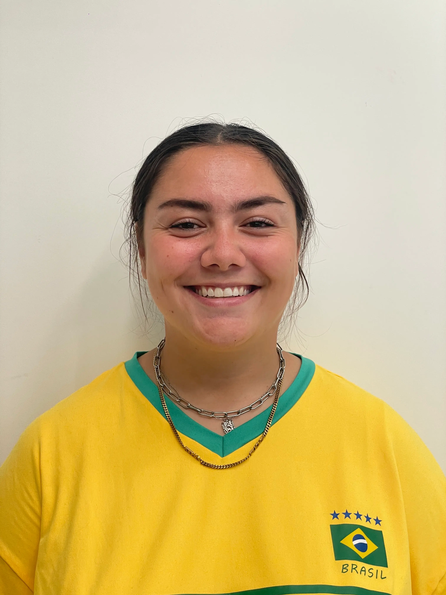

Om mig
Luna Christiansen
Som barn flyttede jeg meget rundt fra sted til sted men det eneste konstante var mine bedsteforældres hjem hvor jeg brugte meget af min tid, især ved siden af min farfar mens han sad og lavede hjemmesider for firmaer. Jeg var meget nysgerrig og har altid haft en interesse for det, og det er også derfor at jeg har valgt at tage denne udannelse.

Multimediedesign
På Multimediedesign uddannelsen lærer vi mange forskellige ting, indtil videre har vi lært rigtig meget om kodning af websites. Udover at lære om kodning har vi også haft få små opgaver med for eksempel klipning af videoer. Vi startede skoleåret ud med at lave en præsentationsvideo af den gruppe vi blev placeret i første dag, i vores gruppe var det mig der stod for klipningen af videoen. Jeg valgte selv at jeg ville klippe videoen da det er noget jeg har gjort meget og har meget interesse for, så derfor syntes jeg at det kunne være en sjov opgave. Udover den video har vi også lavet en klippeøvelse med nogle klip vi fik udleveret, og så fik vi en anden opgave hvor vi selv skulle finde på et vintereventyr og lave en video om det. Vi arbejdede sammen to og to, startede med en brainstorm og kom hurtigt på vores ide. Derefter var det tid til planlægning af videoen, vi fik tegnet vores shots og fundet location, og et par dage senere var vi klar til at filme. Vi var hurtige til at filme da det hele var planlagt i forvejen, så derefter kunne jeg gå hjem og begynde at klippe det sammen. Vi endte med en video som vi begge to var tilfredse med, det var en hyggelig lille opgave og det var fedt at prøve at arbejde med Adobe Premiere Pro. Jeg glæder mig til at arbejde mere med video redigering. Jeg har virkelig lært meget om at kode hjemmesider på mit første semester af uddannelsen, det er en masse læring som jeg er begejstret for at skulle arbejde mere med og bringe det med videre ud i livet. Det har været utrolig spændende at kunne få lov til at udfolde sig kreativt på en helt anden måde end man normalt plejer, kodning er noget som jeg ikke tror at jeg ville kunne finde overskud til at skulle lære mig selv som en hobby så det er super fedt at kunne tage denne uddannelse. Jeg glæder mig meget til at se hvad resten af uddannelsen bringer!
Følg dette link for at se vores vintereventyr video:
https://youtu.be/xA_kTRo_Ie4
Tidligere erfaring
Efter at have færdiggjort HF på Næstved Gymnasium og HF stod den på sabbatår i håbet om at finde ud af hvad drømmejobbet skulle være. Det førte til næsten 6 år i en daginstitution men med andre jobs ved siden af, blandt andet i en garnforretning og på en kaffebar. Jeg prøvede dog relativt ofte at søge efter jobs hvor jeg skulle stå for at lave indhold både via tekst, billeder og video til diverse forskellige sider, jeg fandt dog aldrig det rette match. Håbet om at skulle lave indhold til sociale medier holdte ved hele vejen i gennem mine sabbatår, og håbet er der endnu, men nu må jeg se hvad fremtiden bringer med en Multimediedesign Uddannelse i bagagen.